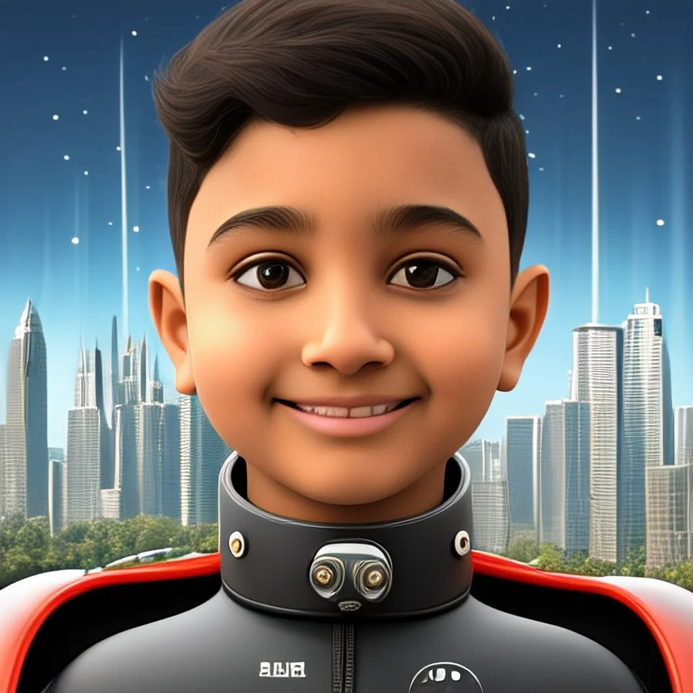

Hello, I'm
ToolboxMy Skills
Featured WorkProject Showcase
Start ProcedureLights Out
Reaction test
Beat the field off the line.
Five lights, one launch. Hit the button the instant they go out. Jump too early and it's a jump start. Your best time is saved on this device.
Press start to begin.
ProjectsGarage
A deep dive into my software, hardware, and research builds. I strongly believe in documenting both successes and failed attempts. Status badges show exactly where each build stands.
Complete & Shipped
In Progress & R&D
AboutDriver Profile

Hello, I'm Ayansh Paliwal
I am a high schooler focused on the intersection of robotics and machine learning, with a goal of contributing to open-source systems. My objective is to push the boundaries of intelligent systems and build solutions that have a lasting impact.
My journey includes mastering all 10 levels of abacus by age 11, diving into programming in multiple languages since age 10, and leading teams in competitive robotics. Beyond academics, I hold a Red belt in Karate and enjoy pushing my limits in sports.
I believe in the power of continuous learning and enjoy sharing my knowledge with others. My goal is to use technology to create meaningful solutions that can make a positive impact on the world, especially in areas like education and sustainability.
Away from the keyboard, I am an avid Formula 1 fan — proudly supporting Max Verstappen with Red Bull Racing! I am deeply passionate about motorsport telemetry, race strategy, and clean automotive engineering, and I absolutely love BMW cars. That's where a lot of my obsession with split-second decisions, peak performance, and data you can actually act on comes from.
My Interests
Fun Fact
"Code is like humor. When you have to explain it, it's bad." - This quote by Cory House reminds me to write clean, self-explanatory code that speaks for itself
EducationAcademy & Education Journey
Current Education
Grade: 9th Grade
School: TISB: The International School Bangalore
Location: India
Favorite Subjects
Computer Science
Mathematics
Physics
The International School Bangalore (TISB)
Grade 7 - Present
Bangalore, India
Currently pursuing middle school education with a strong focus on sciences and technology. Engaging in robotics competitions and competitive programming.
Millburn Middle School
Grade 6
Millburn, NJ, USA
Transitioned to middle school, participating in advanced math tracks and club activities.
Washington School Millburn
Grade 5
Millburn, NJ, USA
Completed elementary education with distinction.
Wyoming Elementary School Millburn
Grades 3 - 4
Millburn, NJ, USA
Foundational years in the Millburn public school system.
Manthan International School
Pre KG - Grade 3
Early Education
Started educational journey in an international environment, fostering early curiosity and social skills.
AchievementsTrophies
Robotics & Engineering
Software & Hackathons
Science & Innovation
Academic Excellence
Sports
HobbiesOff Track
Motorsport & Formula 1
I'm a huge F1 fan — race strategy, tyre calls and pit wall decisions are basically engineering under time pressure. I follow the championship closely and love the technical side of the cars: aero, power units, telemetry. Away from the track I'm a car person through and through, with a soft spot for BMW. It's the sport that got me hooked on data, speed and precision.
Robotics & Arduino
I started tinkering with robots early on — from basic VEX bots to advanced custom designs. Representing Robot Revolution at the state level was a proud moment for me. I taught myself Arduino through YouTube, building cool, functional projects that solved real problems.
Programming
I started coding at age 10, diving into Python, and JavaScript. Since then, I have expanded my knowlange to learning kotlin and dart for app development, C++ for game development. I also taught myself the Arduino Programming Language. I love how coding turns ideas into real tools and games, and it's my favorite way to solve problems creatively.
Martial Arts
I trained in Karate at Moo Duk Kwan and earned my red belt after more than 2 years of consistent effort. I've competed and won at multiple regional tournaments — it's taught me resilience, focus, and confidence.
Sports & Athletics
Sports have always been a big part of my life. From roller skating and competitive swimming to soccer, I've trained and competed since I was 7. I've earned medals at zonal and state levels, and I enjoy pushing my physical limits.
Mental Mathematics
I completed all 10 levels of abacus training, and it unlocked crazy-fast mental math skills. I love working with numbers and solving puzzles using patterns — it's like mental gymnastics for me.